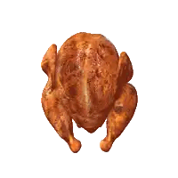

순살치킨 브라질산 닭의 진실
댓글

계실망
닭버지 이제야 깨달아요
어찌 그렇게 살쪘나요
솔직히 튀기면 브라질닭도맛나더라
맛만 좋으면 그만 아닐까요
늘 그렇듯이 국내 영계장 도계장 밥줄 문제로 언플하는거지
광우병, 무인택시등등 항상 그랬어
젊은 계장님 보고싶다 왠지 이쁠것 같아
순살닭이 대부분 브라질산 닭이라며
왜 그첨 순살이 더 비싸요? 시발!
저양반 채널 참 재밌었는데 요즘 영상 올리나
유기함
42일만에 자라는거 ㄹㅇ이가
품종개량은 신이야
국내 육계도 10호 닭 정도면 30일 키움
인간도 빨리 자라고 빨리 크고 키도 크고 지능도 높고 잘생기고 그렇게 못하나
그거 생각나네 초능력이 생기는대신 부작용이 있음
인간도 빨리 자라고 빨리 크고 키도 크고 지능도 높고 잘생기고 그렇게 못하나
그대신 빨리 죽음
닭고기 뿐만 아니라 요샌 다 개량품종이니 품질은 싼 수입산도 다 좋은데 다만 냄새 처리를 덜하거나 안함
한국인은 고기 잡내에 존나 민감해서 출하직전 냄새안나게끔 사료 다바꾸는데 수입산들은 그 과정 거치는게 잘 없어
그 냄새가 나쁘게 말하면 잡내, 좋게 말하면 육향인데 그걸 즐기는 문화도 있다고 하니까 ㅋㅋ
냄새나긴함
월래 국산이든 수입이든 시간지나면 피냄새남
한국 닭도 코브 500 쓰는걸로 알고잇는디
하나로마트에서 구매한 국산 닭다리 정육 에프로 구우면 피가 줄줄 나오더라.. 뽑기를 실패한건진 모르겠는데 뭔가 브라질닭보다 나은 것 같지가 않음
토종닭 푹 삶은거 존나 맛있는데
다른건 몰라도 미국산이면 뭔가 호르몬 범벅일듯.. 유럽하고 밀가루 다른거마냥
냄새가 살짝나긴하는데 염지하니까 큰차이 없어서 잘먹고 있음
장닭이잖아…
털난 티라노 같아서 좋았는데
이건 ㄹㅇ 미안한데 고마운 존재들이네
괴물 닭을 먹고 싶은건데 실망이다
마치 공룡 먹는 기분이었단 말이다
아니 괴물닭이 아니라니 ㅠㅠ
순살치킨 딱대
1키로에 6000~8000원 잘 사먹고 있습니다
솔직히 튀김도 한두번만 튀겨보면
수육 만큼 쉬움
기름 걸러서 냉장고 보관하는것도 가 가능해서 ㄷ번정도는 써먹고 버림
업장에서는 더 쓰겠지 ㅋㅋㅋ
근데 치킨업체에서 쓰는 순살은 브라질닭인데, 왜 비싸게 파는거임?
난 계속 괴물닭 생각나서 이상하게 못먹겠음 ㅋㅋㅋㅋ
괴물닭이 아니었다고? 아 개실망